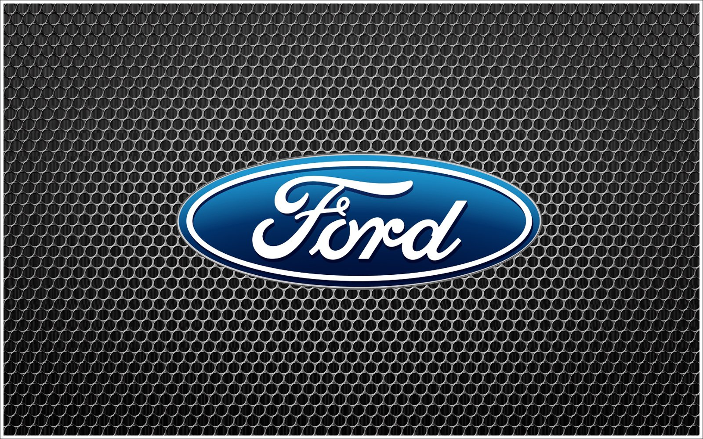

Ford Motor Company fue fundada el 16 de junio de 1903 por Henry Ford en Detroit, Michigan. Desde sus inicios, Ford ha sido pionera en la producción de automóviles accesibles para la clase trabajadora, como el famoso modelo T, que revolucionó la forma en que las personas se movilizaban y trabajaban. La compañía ha sido líder en innovación tecnológica, desarrollando motores más eficientes, sistemas de seguridad avanzados y soluciones de movilidad sostenible. Ford ha estado bajo control familiar continuo durante más de 110 años y ahora abarca dos marcas: Ford y Lincoln.
Ford ha competido oficialmente en carreras de automovilismo en numerosas disciplinas y regiones. En Fórmula 1, Ford fue proveedor de motores desde 1967 hasta 2004 a través de la preparadora Cosworth. Logró 176 victorias de la mano de los equipos Lotus y McLaren entre otros. También participó de manera semioficial con Stewart Grand Prix desde 1997 hasta 1999; y con Jaguar Racing desde 2001 hasta 2004.
Ford también compitió en IndyCar en colaboración con Cosworth. Logró seis victorias en las 500 Millas de Indianápolis desde 1965 hasta 1971 por parte de los pilotos Jim Clark, Graham Hill, A. J. Foyt, Mario Andretti y Al Unser; y otras dos en 1995 y 1996 con Jacques Villeneuve y Buddy Lazier. También en Estados Unidos, ha participado en la Copa NASCAR con sus marcas Ford (desde 1955), Mercury (décadas de 1950 a 1980), Lincoln (1949 a 1957) y Edsel (1959), de la mano de los equipos Roush, Penske, Petty y Yates entre otros. Ha tenido entre sus pilotos a Buck Baker, Ned Jarrett, David Pearson, Bill Elliott, Dale Jarrett y Matt Kenseth.
imagenes de los modelos mas conocidos: